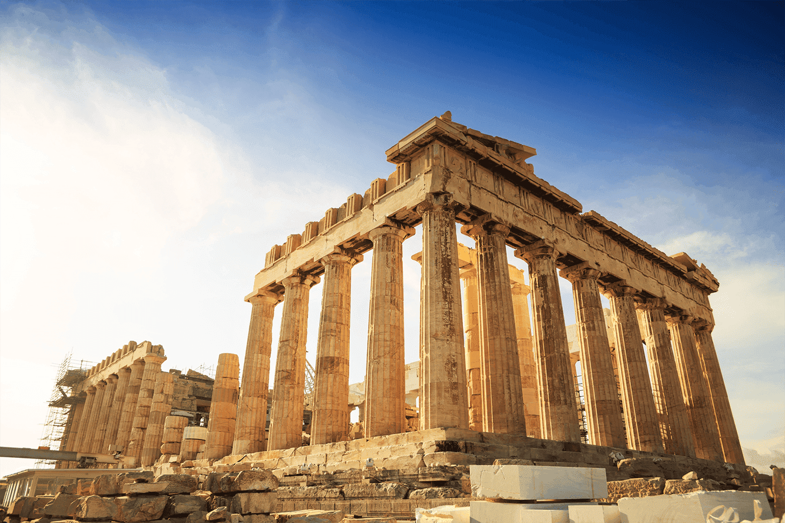

Pontos turisticos da europa
- Torre Eiffel
- Atenas
- Coliseu de Roma
- Torre Big Ben
- Sagrada Família
- Catedral de Notre Dame
- Museumplein
- Torre de Belém

Atenas
Visitar Atenas é fazer uma viagem no tempo, na história e na mitologia. Conhecida como “berço da civilização ocidental”, a cidade abriga construções milenares que ajudam a narrar a história da humanidade. O número de monumentos, museus e outros espaços para visitar na cidade é grande, e boa parte deles estão concentrados na região central.